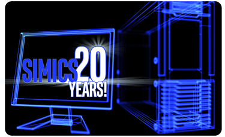

This is the second “Wind River® Simics® at 20” blog featuring feats from the past and how they reflect into current technology and best practices.
Back in 2004, Simics was being developed by the startup company Virtutech*, and the Embedded Systems Conference (ESC) was the place to show off your tools for embedded developers. For some years in the early 2000s, ESC was full of virtual platform tools targeting developers in the embedded market. Pretty much all the small companies that exhibited at ESC 2004 have since been acquired by bigger firms, but a lot of the products and technologies live on. Apart from Virtutech, I recall there was Axys* (whose technology now lives on at ARM*), Virtio* (now part of Cadence*), VaST* (now part of Synopsys*), and probably a few more.
To stand out from the crowd, Virtutech wanted to do something more than just show a virtual board booting a real-time operating system (RTOS) outputting “exciting” printouts to a serial console. In the end, we went for networking as a stand-out feature, and we cooked up an insane demo: a simulation containing 1,002 target machines.
The target system setup consisted of 1000 Internet Relay Chat (IRC) clients running under script control, connected to an IRC server, along with one graphical IRC client running on a Sun* Solaris* graphical desktop displaying the chat traffic for the demo audience to see. This ran on eight rack-mounted servers that we put in our booth on the show floor—a single screen showed all the output and command lines of all the Simics instances. It looked nice, as you can see below in a photo of the ESC 2004 Virtutech booth.
Photo by Jakob Engblom
The simulation design involved running 13 separate Simics processes linked together in a single virtual network, using the Simics distributed simulation technology, “Simics Central.” The block diagram below illustrates the setup (as shown in the slide used to explain it at the demo booth).
Ten of the Simics processes each simulated 100 PowerPC* 440GP-based targets. These targets each ran a Montavista* Linux* instance. On top of that, a scripted IRC client sent traffic to the IRC server. The IRC server ran on a PowerPC 750-based target, also running Montavista Linux. The interactive client ran on Sun* Solaris* 9, on a virtual SunFire* 3500 UltraSPARC* 64-bit target system. Finally, a thirteenth Simics process ran the Simics Central¹ network simulation.
Each Simics process had its own dedicated host processor (this was before multicore processors became common). The scripted clients were run on five dual-processor Linux hosts, which were considered really cool hardware for the day (the top five servers shown in the photo above). The other three servers had just one processor each, providing a total of 13 host processors to run 13 Simics processes (containing 1002 simulated target processor cores in total).
The screen-capture below shows what the demo looked like as it ran.
In the upper-left corner, we have the Simics command-lines for the 10 processes that run 100 machines each. Below that in yellow is the serial console of the Sun server, and below that in black is the serial console of the PowerPC 750 machine. Down at the right is the graphics console of the Sun server, with the graphical IRC client showing what the various IRC clients are saying.
In 2004, Simics technology in had gone through some major updates compared to the 1998 version that was discussed in a previous blog. Just-in-Time (JIT) compilation technology had become available, and with a bit of tuning, Simics could run a PowerPC target at the speed of one giga-instruction per second (GIPS).
The speed provided by the JIT gave a good starting point to run a lot of machines in parallel. Another critical component was the aggressive exploitation of hypersimulation (also known as idle-loop optimization), where Simics skips ahead when it realizes that a target processor is not doing anything useful. The scripted clients in the setup were mostly idle, allowing them to run at a reasonable speed, even when multiplexed 100 times onto a single host processor.
The next problem for scaling was memory usage for the PowerPC 440GP machines that made up the bulk of the configuration. Even if each target machine had only 128MB of RAM, 100 of them would theoretically require 12GB, which was beyond the realm of possibility for hosts at the time. However, the machines all shared a large part of their state, since they all ran the same OS and software stack. That could be exploited to reduce the amount of state that had to be stored on the host.
A single instance of the PowerPC 440GP machine was booted to a point where it was ready to connect to the network, and its state was saved to a Simics checkpoint. With some clever hacks to Simics, all 100 machines in a process would share the same memory and disk images from the checkpoint state. Only a small amount of additional state was needed to make each machine unique – primarily network addresses and IRC user names. In this way, 100 machines could be shoe-horned into a single Simics process with some special programming. Today, Simics can detect such shared state using a feature known as page sharing; no hacking or tricks are needed.
We had some other demos on the floor that year: there were Simics models running various OSs, including an Intel® Pentium® 4-based PC with Voodoo* graphics running Red Hat* Linux* 7.3 (note that this is the old numbering scheme for Red Hat Linux, not the current Red Hat Enterprise Linux). There was a bit of tooling, including debugging a target system across its Linux operating system, glibc, and target applications using gdb (the GNU debugger connected directly to Simics). There was a router demo with four PCs, each with four separate network interface cards (NICs) connected to form a redundant network. That demo was used for a very long time, afterwards.
Overall, Simics made a big splash at ESC 2004. Our exhibit showed how far the technology had come at the time, and looking back from 2018, how much more was still to come…
The 1002-machine demo that was state-of-the-art in 2004 can be repeated with a lot less effort today. With the advent of multicore processors, running 1000 target machines can be done on a single server.
A normal server today has 12 or more hardware cores per socket, plus hyperthreading to provide additional execution resources; that is equivalent to the core count of our 2004 rack, but inside a single processor socket, and then some.
There is also no need to start up multiple Simics processes to run a massive virtual network. Using Simics Multi-machine Accelerator, Simics now can run separate target machines connected over a network, in parallel, inside a single multithreaded Simics process—a feature introduced with Simics 4.0 in 2008.
Thus, simulating a thousand machines in 2018 is as easy as writing a script that creates a machine in a network, and then iterating it 1000 times. Give the script a parameter to select the number of machines to run, and then click OK, as shown in the screen image below.
The simulation resulting from this example contains some 238,000 individual Simics simulation objects (such as processor cores, memories, devices, or network links). Simics will typically take advantage of all the host cores in the host system in order to run a parallel simulation like this as quickly as possible.
Out of curiosity, we brought up the PowerPC 440GP-based target system that was used in 2004 in the latest version of Simics. Booting 1000 machines inside a single Simics process took about 14 real-world minutes on a quad-core (eight threads) host, using 40GB of RAM. The target machines required about 14 virtual seconds to boot, meaning that the slowdown for the 1000 machine setup was around 60—a very good result for a network of this scale, on a rather modest host.
Using the page-sharing feature of Simics mentioned above, we could remove roughly half the memory. That is, when booting the machines separately like this, the effective shared state is about half the machine state—for example, 20MB is common with other machines, and 20MB is different. Note that this is not entirely comparable to the 2004 demo, since each machine is booted separately from scratch, while in 2004, we separated the machines post-boot. Thus, more state would be expected to be different as the differences are introduced earlier in the boot process.
Why did we select a network for our ESC 2004 demo? Because that was what our customer base was asking for! Simics customers had started to build very large target systems on Simics, as they wanted to simulate racks and networks of racks. At the same time, the concept known today as the Internet of Things² (IoT) was beginning to gather interest, creating a need to simulate large numbers of nodes (which we discussed in a 2005 paper).
Large-scale network simulation is still something Simics does well. An example of Simics use for IoT was presented a couple of years ago by Wind River, where Simics simulated a 1000-node IoT network for testing.
This look back to 2004 illustrates how Simics keeps scaling with the needs of new applications, and how previously brittle hacks have evolved into stable, standard product features over time. Simics architecture and performance is not standing still—it is continuously improving over time.
Look forward to more looks back, as we keep celebrating 20 years of commercial Simics.
* Other names and brands may be claimed as the property of others.
¹ Simics Central was replaced by a new distributed simulation mechanism in Simics 4.0, and it is no longer part of the Simics product. You can still find mentions of it around the Internet, but it is not how Simics works today.
² According to Google Trends, the term “IoT” started to become popular around 2012. In 2004-2005, the concept of lots of little computers spread in the physical world was usually called “sensor networks”.
Product and Performance Information